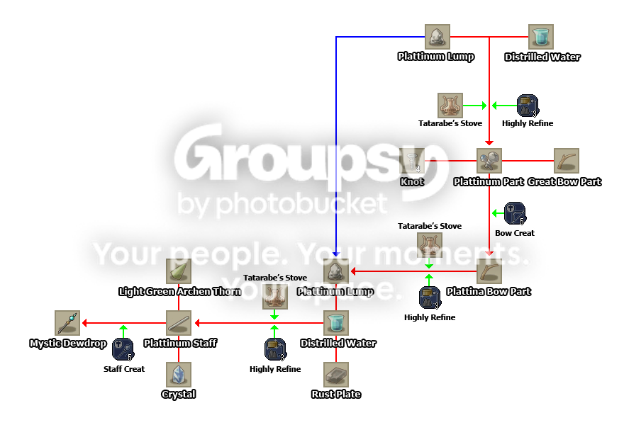

ผสมคทา Mystic Dewdrop ยังไงอ่ะครับ
คือผมกดดูส่วนผสมจากในเกมเรื่อยๆ
มันก็ได้ตามรูปข้างล่างนี้อ่ะครับ
แต่ทีนี้พอไปถึงPlattinum Part ซึ่งเป็นส่วนผสมของ Palttinum Lump
มันดันบอกให้ใช้ Plattinum Lump ผสม
สรุปคือผสมต้องหา Plattinum Part หรือไม่ก็ Plattinum Lump
อย่างใดอย่างหนึ่งใช่ไหมครับ
แล้วมันจะหาได้จากที่ไหนรบกวนบอกทีนะครับ
อ่อ แล้วสกิล Highly Refine กับ Staff Creat จะให้ NPC ตัวไหนช่วยทำให้ได้อ่ะครับ
เอ่อ...อีกเรื่องนึงๆ
อีกอย่างหนึ่งคือ Light Green Archen Thorn หาจากตัวอะไรหรือครับ
แล้วต้องมีสกิลปราชญ์สายไหนหรือเปล่าครับ
ขอบคุณมากๆครับ
(พอดีไม่มีอะไรทำเลยคิดจะผสมคทาไว้ใช้เองล่วงหน้า )
)
มันก็ได้ตามรูปข้างล่างนี้อ่ะครับ

แต่ทีนี้พอไปถึงPlattinum Part ซึ่งเป็นส่วนผสมของ Palttinum Lump
มันดันบอกให้ใช้ Plattinum Lump ผสม
สรุปคือผสมต้องหา Plattinum Part หรือไม่ก็ Plattinum Lump
อย่างใดอย่างหนึ่งใช่ไหมครับ
แล้วมันจะหาได้จากที่ไหนรบกวนบอกทีนะครับ
อ่อ แล้วสกิล Highly Refine กับ Staff Creat จะให้ NPC ตัวไหนช่วยทำให้ได้อ่ะครับ
เอ่อ...อีกเรื่องนึงๆ
อีกอย่างหนึ่งคือ Light Green Archen Thorn หาจากตัวอะไรหรือครับ
แล้วต้องมีสกิลปราชญ์สายไหนหรือเปล่าครับ
ขอบคุณมากๆครับ
(พอดีไม่มีอะไรทำเลยคิดจะผสมคทาไว้ใช้เองล่วงหน้า
)